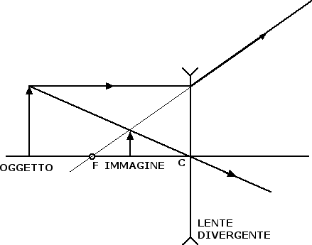

Rifrazione e lenti
Lenti divergenti
Una lente si dice divergente quando fa divergere i raggi che provengono lungo direzioni parallele a quella dell'asse ottico. In questi casi i raggi rifratti non si incontrano mai, i prolungamenti di tali raggi si incontrano invece nel fuoco della lente.
Come nel caso delle lenti convergenti, anche per le lenti divergenti la costruzione dell'immagine avviene prendendo in considerazione punto per punto il raggio parallelo all'asse ottico (il cui prolungamento converge nel fuoco della lente) e il raggio che passa per il centro della lente (che non cambia direzione nel passaggio attraverso la lente). Come nel caso degli specchi convessi, l'immagine che si viene a formare è sempre un'immagine virtuale, rimpicciolita e diritta, come emerge dalla seguente figura:

Anche per le lenti, sia convergenti che divergenti, vale una formula dei punti coniugati: se indichiamo con p la distanza dell'oggetto dal centro della lente, con f la distanza focale della lente e con q la distanza dell'immagine dalla lente abbiamo che 1 / p + 1 / q = 1 / f. La formula è identica a quella incontrata nel caso degli specchi. C'è però un'importante differenza relativa alle convenzioni sui segni. Nel caso delle lenti la distanza q è positiva quando l'immagine si forma dietro la lente (ossia dalla parte opposta rispetto all'oggetto dal quale provengono i raggi), la distanza q è invece negativa quando l'immagine si forma davanti alla lente (ossia dalla stessa parte dell'oggetto). In una lente convergente pertanto q > 0 quando l'immagine è reale e capovolta, q < 0 quando l'immagine è virtuale e diritta. In una lente divergente invece q è sempre minore di 0, dal momento che l'immagine si forma sempre davanti alla lente. Per quanto riguarda le distanze focali f > 0 nel caso di lenti convergenti mentre f < 0 nel caso di lenti divergenti.
L'ingrandimento di una lente è dato dalla formula usuale G = q / p. L'altezza dell'immagine himm è legata all'altezza dell'oggetto hogg dalla seguente relazione himm = G · hogg.
Per concludere questa sezione, ricordiamo che il potere diottrico di una lente (convergente o divergente) d si definisce come l'inverso della distanza focale della lente d = 1 / f. Se misuriamo la distanza focale f in metri, il rapporto 1 / f fornisce il numero di diottrie della lente. Ad esempio, una lente da 2 diottrie è una lente avente distanza focale 1 / 2 m = 0.5 m.
Nel nostro occhio la luce viene rifratta dalla cornea, dall'umor acqueo, dal cristallino e dall'umor vitreo e l'immagine di un oggetto si forma nella retina, posta sul fondo dell'occhio. Le lenti divergenti vengono usate per correggere la miopia, ossia per compensare un occhio troppo convergente che tende a formare l'immagine degli oggetti prima della retina. Le lenti convergenti vengono invece usate per correggere la presbiopia, ossia per compensare un occhio ipermetrope che tende a convergere troppo poco la luce in arrivo.